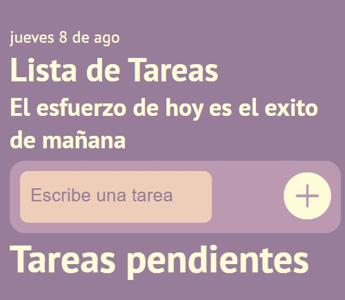
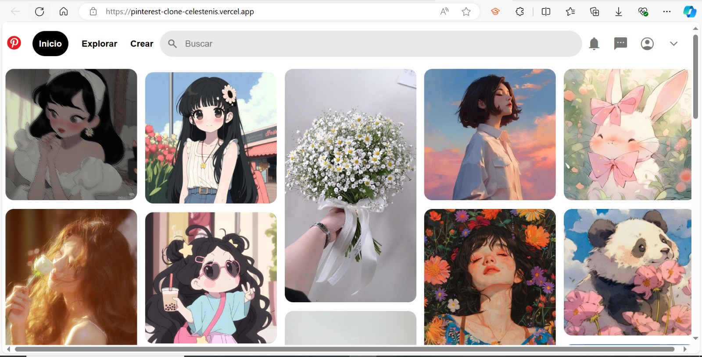
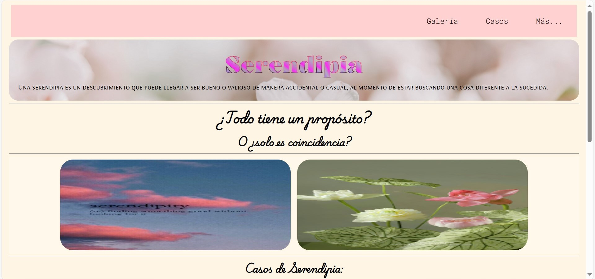

Celeste Nicolás Isidro
Enfocada en el mantenimiento, diagnóstico y optimización de infraestructura informática. Cuento con experiencia en Soporte Técnico y capacidades analíticas aplicadas al procesamiento de datos con SQL, Python y Excel para la solución efectiva de problemas.
Habilidades & Herramientas Técnicas
Análisis de Datos & Bases de Datos
SQL / MySQL / MongoDB
ConsultasPython
Pandas & Limpieza de DatosExcel / Paquete Office
Tablas Dinámicas & FórmulasPower BI / Dashboards
Visualización & KPIsSoporte Técnico & Sistemas IT
Diagnóstico Hardware & SW
MantenimientoAtención & Helpdesk
Soporte a Usuarios FinalesSistemas Operativos
Windows Server / LinuxRedes & Conectividad
Configuración Básica de RedDesarrollo Web & Herramientas (Complementario)
HTML5 / CSS3
Maquetación WebJavaScript
Lógica Front-endGit & GitHub
Control de VersionesTecnolochicas PRO
Formación BootcampFortalezas Profesionales
Análisis Lógico de Datos
Habilidad para procesar datos, identificar inconsistencias, extraer patrones clave y apoyar la toma de decisiones.
Resolución de Incidencias (Troubleshooting)
Metodología estructurada para diagnosticar fallas en equipos, programas informáticos y configuraciones de red.
Atención & Soporte al Usuario
Empatía y claridad comunicativa para asesorar a usuarios finales y resolver problemas técnicos de forma ágil.
Trabajo Colaborativo
Adaptabilidad para trabajar en equipos multidisciplinarios de TI, compartiendo conocimientos y cumpliendo objetivos.
Mantenimiento de Sistemas
Prevención y corrección de errores en hardware/software para asegurar la disponibilidad continua de los equipos.
Formación en Sistemas (ITT)
Conocimientos integrales en arquitectura de computadoras, redes, bases de datos y desarrollo de software.
Cursos & Certificaciones
Capacitaciones complementarias en Análisis de Datos, Soporte Técnico IT y desarrollo de software.
Data Scientist Jr
Tecnolochicas PRO
Extracción de datos mediante consultas SQL (JOINs, agrupamientos), procesamiento básico con Python y reportes.
Desarrollo Web Frontend
Tecnolochicas Pro / Fundación Televisa
Capacitación intensiva en desarrollo web frontend, trabajo en equipo, metodologías agiles y habilidades digitales clave.
Excel (Inter. - Avanzado)
Santander Open Academy
Dominio de tablas dinámicas, funciones de búsqueda (BUSCARV/X), filtrado de volúmenes y dashboards.
Power BI para Análisis de Datos
Santander Open Academy
Creación de reportes y dashboards interactivos, modelado de datos y visualización de información.
Redes & Sistemas Operativos
Instituto Tecnológico de Tehuacán
Configuración de redes de datos, administración de sistemas Windows/Linux y protocolos de conectividad.
Ingeniería en Sistemas Computacionales
TECNM | ITT
Ingeniería enfocada en las tecnologías de la información y la comunicación.
Proyectos & Desarrollos Prácticos

Gestor de Tareas & Persistencia
Aplicación para la administración de eventos y tareas con lógica de almacenamiento local (LocalStorage) y filtrado dinámico de estados.

Estructura UI - Catálogo Visual
Réplica responsiva inspirada en Pinterest, enfocada en la distribución de elementos multimedia y maquetación de datos visuales.

Despliegue & Servidores Web
Proyecto práctico de introducción al alojamiento web, configuración de dominios y ciclo de despliegue continuo en la nube.
Testimonios de Colegas

Jairo Jesús Reyes Jiménez
Estudiante del ITT"Es una persona responsable en la que puedes confiar en momentos críticos de los proyectos. Además, es una de las personas que más se esfuerza para poder cumplir con todo lo que se proponga."

Mitzi Ameyalli Ortiz Flores
Estudiante del ITT"Es alguien dispuesta a tomar las riendas si es necesario y brindar su apoyo a los demás. Carismática, comprometida y muy honesta al trabajar en equipo. Brinda siempre excelentes ideas y apoyo mutuo."
Brandón Damián Juárez González
Estudiante del ITT"Durante los últimos años tuve el privilegio de colaborar con Celeste en diversos proyectos. Celeste demostró una notable habilidad para organizar equipos y una capacidad excepcional para adaptarse a cambios inesperados."
¡Hablemos de Oportunidades Laborales!
¿Buscas una analista de datos junior o soporte técnico comprometido para tu equipo de TI? Ponte en contacto conmigo.